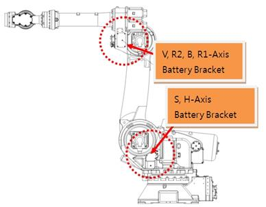
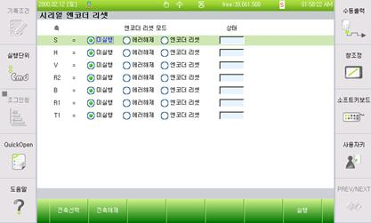

1.1.10.1. 개요
엔코더가 모터의 위치데이터를 보존하기 위해서는 상시 엔코더에 전원이 공급되어야 합니다. 엔코더의 전원은 제어기 전원을 ON시켜 두거나 엔코더용 백업 배터리에 의해서 전원이 공급됩니다. 만일 엔코더용 백업 배터리가 방전되어 있는 상태에서 제어기 전원을 OFF 시키면 엔코더가 위치데이터를 잃어버리기 때문에 에러가 발생합니다. 마찬가지로 모터를 교체할 때에도 신규 모터의 엔코더는 이미 전원이 공급되지 않는 상태였기 때문에 동일한 에러가 발생합니다.
엔코더를 리셋시키면 해당 축의 기준위치 데이터가 변경되므로 반드시 축좌표계 수동 조작으로 로봇을 기준자세로 이동하여 해당 축의 엔코더 보정을 재실시해야 합니다.
1.1.10.2. 원인 및 점검방법
|
(1) 엔코더 배터리 전압을 확인하십시오.
(2) 엔코더 배터리 결선 상태를 점검하십시오.
(3) 모터를 교체 시험하십시오.
(4) 엔코더 리셋 이후에는 로봇 기준위치에서 엔코더 보정을 재실시해야 합니다. |
(1) 엔코더 배터리 전압을 확인하십시오.
엔코더용 배터리는 3.6V 입니다. 이 전압이 3.0V~3.2V 로 저하되면 “W0104 ○축 엔코더Battery 전압저하입니다” 로 표시 됩니다. 이 경고가 발생할 때 엔코더용 배터리를 교환해야 합니다. 엔코더 배터리 교환은 반드시 제어기 전원이 ON되어 있는 상태에서 배터리를 교체해야 합니다. 이 상태에서 정상적인 엔코더 배터리로 교체하면 문제 없이 로봇을 계속 사용할 수 있습니다.
엔코더 배터리 교체시기를 지나서 엔코더용 배터리 전압이 2.5V~3.0V 가 되면 “E0108 ○축 엔코더 이상: 엔코더 리셋 필요” 에러가 발생합니다. 이 에러가 발생하면 이미 엔코더의 위치데이터를 잃어버린 상태입니다. 엔코더 배터리를 교체하고 엔코더를 리셋 시킨 후에 축좌표계 수동 조작으로 로봇을 기준자세로 이동하여 해당 축의 엔코더 보정을 재실시 해야 합니다.

그림 1.50 엔코더 배터리 교환 위치
엔코더 리셋은 아래의 메뉴에서 실행합니다.
Ø 시스템
Ø 5. 초기화
Ø 4. 시리얼 엔코더 리셋

(2) 엔코더 배터리 결선 상태를 점검하십시오.
엔코더 배터리 위치부터 모터까지 연결되는 배터리 결선 상태를 확인하십시오.
(3) 모터를 교체 시험하십시오.
상기 조치로도 문제가 해결되지 않는다면 엔코더 자체 고장일 가능성이 높습니다. 모터를 교체 시험하십시오.